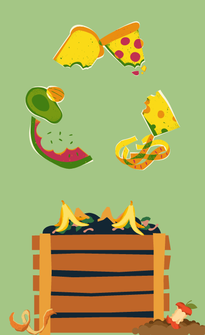

The Effects of Banana Peel Compost on the Amount of Lettuce Leaves Produced
Background and Significance of the Study

Composting has significant benefits for both communities and the environment since it not only benefits the planet but also the individuals who utilize it to make their communities better and cleaner. Compost has several advantages, including improving soil quality, preserving moisture, and reducing plant diseases and pests. It lessens the need for chemical fertilizers and promotes the growth of helpful bacteria and fungi that decompose organic material to produce humus, a nutrient-rich substance. It can help with food shortages and spare people from worrying about running out of food, and it also has easily accessible resources because kitchen waste can be used to make it. Therefore, composting is essential for the community and the environment since it enables individuals to create a better living environment. Our partner institution, SMAC could possibly benefit from this by composting. We could teach the children at SMAC to compost, and harvest plants. SMAC can grow a vast number of lettuce, vegetables, and/or fruits in their garden with the help of our organic compost made from banana peels. This extends beyond banana peels and includes kitchen waste, which is common in many homes and undoubtedly also exists at the orphanage.
They can compost in order to save money and have easy access to food rather than paying a lot of money for pricey fruit and vegetables from the store or supermarket. They could also possibly earn money by selling the goods they’ve harvested and use that money to provide for the needs of the children.
Problem Statement, Hypothesis, and Variables
 Problem Statement: How will the banana peel compost affect the number of lettuce leaves?
Problem Statement: How will the banana peel compost affect the number of lettuce leaves?
Hypothesis: If we use banana peels as compost for our lettuce, then it will produce more leaves.
Independent Variable: Presence of the banana peel compost.
Dependent Variable: The number of lettuce leaves produced

Controlled or Constant Variables:
-Amount of water
-Amount of sunlight
-Type of soil
-Type of seed
-Amount of lettuce seeds in each pot
-Amount of Temperature
-Experiment Duration: 1 month
Review of Related Literature
Lettuce (Lactuca Sativa) will be the particular plant on which our group focuses on. According to study, this plant needs the five nutrients phosphorus, potassium, nitrogen, magnesium, and calcium to grow healthily. The most advised nitrogen level is 5, followed by phosphorus between 5 and 20, then potassium ranging from 20 to 40. It also needs a healthy dose of calcium; the system's PPM should be between 100 and 150. Additionally, it needs about a quarter-teaspoon of pure magnesium. The majority of leafy greens, including lettuce, spinach, and kale, profit from exceptionally high nitrogen levels. It influences not just the rate of leaf growth but also the maximum size that they may attain. The majority of hydroponic plants, including lettuce, require phosphorus as a vital nutrient. It influences how quickly the plant grows and how well it develops. The majority of plants, including hydroponically grown lettuce, require potassium as a secondary nutrient. Plants produce thick, robust leaves as a result. Now, one of the most crucial micronutrients for growing good hydroponic lettuce is calcium. A sufficient calcium intake encourages crisp leaves with minimal to no tip burn. In addition to controlling a healthy chlorophyll synthesis, magnesium is also crucial for triggering certain enzyme systems in plants. The needed nutrients we need for lettuce plant is Leafy vegetables require adequate levels of nitrogen (N), phosphorous (P), and potassium (K) for a high-quality harvest. A good fertilizer ideal for lettuce should have the right balance of these nutrients. For best results use a Banana peel compost that provides for optimum root growth and contains plant food to help them develop. Don't be put off growing fruit and vegetables by lack of space. You can achieve healthy crops in pots, hanging baskets, and, grow bags; even in the smallest of areas. The material we will be using for our composting to deliver the needs of our nutrients is Pot, Soil, Shovel, and Banana peels. The plant identified is banana peel compost. This has nutrients such as calcium, which promotes root growth helps add oxygen to your soil, and holds together the cell walls of plants. When calcium is deficient, new tissue such as root tips, young leaves, and shoot tips often exhibit distorted growth from improper cell wall formation. magnesium, which assists with photosynthesis, it is also needed for cell division and protein formation, and activation of several enzyme systems and is an essential component for plant respiration. sulfur, which helps plants develop strong roots and repel pests, promotes nodulation in legumes, helps develop and activate certain enzymes and vitamins, and phosphorus, which improves fruiting and flowering and assists with pollination and seed germination and viability, also promotes early root growth, winter hardiness, and seed formation, stimulates tillering, and increases water use efficiency. The best or most effective ways to apply and utilize compost are to sprinkle it on top of or mix it into your flower and vegetable beds, gently rake compost into tree beds, blend it with potting soil to revive indoor plants or lay it on top of the soil on your lawn as a soil supplement. This enhances soil texture, controls moisture, and promotes microbes that aid in nutrient delivery to plant roots. fosters strong root systems, which reduces runoff; it may help eliminate chemical pesticides since it includes beneficial bacteria that protect plants from diseases and pests.
CONTROLLED AND EXPERIMENTAL SET-UPS
Set-up
Control Set-up
Experimental
Set-up 1
Experimental
Set-up 2
Experimental
Set-up 3
Experimental
Set-up 4
Description
No banana peel compost
15 grams of banana peel compost
30 grams of banana peel compost
45 grams of banana peel compost
60 grams of banana peel compost
No. of Trials or Replicates
3 trials
3 trials
3 trials
3 trials
3 trials
EXPERIMENTAL DATA TO BE MEASURED OR OBSERVED
Experimental Measurement or Observation
Description of Measurement or Observation
Significance of Observation
No. of leaves on lettuce
Number of leaves will be counted every Monday, Wednesday, and Thursday.
Dependent variable; a measurement related to plant growth.
Amount of compost put on the soil
Amount of compost will be measured before putting on the soil
Independent variable
pH level of the lettuce
Around 5.80 - 6.15 pH
A typical green leaf has a pH of 5.80 to 6.15. This pH value is in the medium level.
Color of the lettuce leaves
To be checked twice a week
Light green or reddish brown
MATERIALS AND EQUIPMENT NEEDED
Materials and Equipment
Quantity needed
Description of Use
Specifications or Criteria for
Materials and Equipment
Banana peels
10 pcs or more
Compost starting material
n/a
Lettuce seeds
15 seedlings
Test plants for experiment
n/a
Shovel
1pc
For mixing of the raw materials and materials for soil aeration
n/a
Water
100 ml
To be poured to all of the set-ups with the same amount
tap water
Soil
1kg
To plant the lettuce seeds in
Loam soil
Pots
5 pcs
Place where to plant the lettuce seeds
n/a
PROCEDURES FOR TESTING AND GATHERING/OBTAINING DATA
Section
Step-by-Step Procedure
Producing or Sourcing the Compost Material
First, choose a corner first where you'll produce your compost. Then, gather your raw materials such as the banana peels. Next, cut the banana peels into smaller pieces. After that, gather materials for soil aeration such as dried or fallen leaves. Layer the banana peels and dried/fallen leaves and mix them from time to time. It might take a month for the compost to get ready so prepare your controlled and experimental set-ups for the time being.
Sourcing and Preparing the Test Plants and Plant Soil
After producing your compost, prepare the materials needed to make your controlled and experimental set-ups such as soil, pots, the seeds, and the shovel. Put the soil in the pots and then the lettuce seed. Do this for all of the set-ups. Lastly, pour 100ml of water once or twice a week.
Making observations and/or measurements about the Compost
When the finished compost is dark brown in color, has a strange but not a very putrid odor, and crumbles in your fingers, you will know it is ready. Another is when it’s quite warm.
Dosage and Frequency of Compost Application to the Test Plants
Set up 1 will receive 15 grams of compost, Set up 2 will receive 30 grams of compost, Set up 3 will receive 45 grams of compost, Set up 4 will receive 60 grams of compost, and the controlled set up will not receive any banana peel compost.
Making observations and/or measurements about the Test Plants
Every Monday and Wednesday, water will be applied to each setup, and when the compost is ready, every Monday, Wednesday, and Thursday, the plants will receive the prescribed amount of compost. Every Sunday, the final day of the week, measurements will be conducted.
Reference:
Composting at home. (2022, July 7). US EPA. Retrieved September 29, 2022, from https://www.epa.gov/recycle/composting-home
What is the Best Fertilizer for Lettuce? (n.d.). Greenway Biotech, Inc. https://www.greenwaybiotech.com/blogs/gardening-articles/what-is-the-best-fertilizer-for-lettuce
Jamie, A. (n.d.). THESE Are the Nutrients Your Hydroponic Lettuce Needs – WhyFarmIt.com. https://whyfarmit.com/hydroponic-lettuce-nutrients/
Problem Statement: How will the banana peel compost affect the number of lettuce leaves?
Hypothesis: If we use banana peels as compost for our lettuce, then it will produce more leaves.
Independent Variable: Presence of the banana peel compost.
Dependent Variable: The number of lettuce leaves produced
Controlled or Constant Variables:
-Amount of water
-Amount of sunlight
-Type of soil
-Type of seed
-Amount of lettuce seeds in each pot
-Amount of Temperature
-Experiment Duration: 1 month
Set-up 1
Set-up 2
Set-up 3
Set-up 4
Materials and Equipment
What is the Best Fertilizer for Lettuce? (n.d.). Greenway Biotech, Inc. https://www.greenwaybiotech.com/blogs/gardening-articles/what-is-the-best-fertilizer-for-lettuce
Jamie, A. (n.d.). THESE Are the Nutrients Your Hydroponic Lettuce Needs – WhyFarmIt.com. https://whyfarmit.com/hydroponic-lettuce-nutrients/